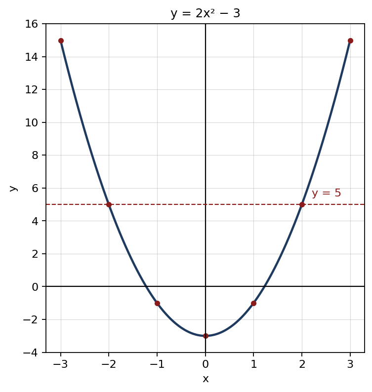
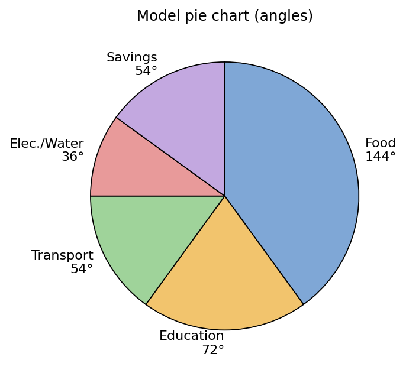

1. √7744: 77 → 82 = 64, remainder 13 ; 1344 → 168 × 8 = 1344, remainder 0
Final answer: 88
(2 marks)2. 74 + 104 = 174 ; 174 ÷ 1710 = 174 × 1017 = 104
Final answer: 212
(2 marks)3. (x2 + 6x + 9) − (x2 − 6x + 9)
Final answer: 12x
(2 marks)4. 3x2 + 12x − 2x − 8 = 3x(x + 4) − 2(x + 4)
Final answer: (3x − 2)(x + 4)
(2 marks)5. x2 − 4 = (x − 2)(x + 2) ; x2 + x − 6 = (x + 3)(x − 2)
Final answer: (x − 2)(x + 2)(x + 3)
(2 marks)6. 2x(x − 1)(x + 1) × x + 14x2
Final answer: 12x(x − 1)
(2 marks)7. 60360 × 2 × 227 × 10.5 = 16 × 66
Final answer: 11 cm
(2 marks)8. 9 parts = 180° ⇒ one part = 20° ; 4 × 20°
Final answer: 80°
(2 marks)9. x + 1 = 32 = 9
Final answer: x = 8
(2 marks)10. lg 32 + lg 5 − lg 9 = lg 9 + lg 5 − lg 9
Final answer: lg 5
(2 marks)11. S20 = 202 [2 × 2 + 19 × 3] = 10 × 61
Final answer: 610
(2 marks)12. n(A ∪ B) = 30 + 25 − 12 = 43 ; 50 − 43
Final answer: 7
(2 marks)13. 100 → 120 → 120 × 0.8 = 96
Final answer: a decrease of 4%
(2 marks)14. Distance = 60 × 4 = 240 km ; 240 ÷ 3
Final answer: 80 km/h
(2 marks)15. T2π = √lg ⇒ T24π2 = lg
Final answer: l = gT24π2
(2 marks)16. −2x ≤ 6 ⇒ x ≥ −3
Final answer: −3
(2 marks)17. Multiples of 4: 4, 8, 12, 16, 20 (5) ; 520
Final answer: 14
(2 marks)18. Sum = 5 × 12 = 60 ; 60 − 20 = 40 ; 40 ÷ 4
Final answer: 10
(2 marks)19. ΔDBC = ΔABC = 35 cm2 (same base, between the same parallels) ; DE is a median ⇒ ΔDEC = 12 × 35
Final answer: 17.5 cm2
(2 marks)20. 0.9 m3 = 900 litres ; 900 ÷ 12 = 75 minutes
Final answer: 1 hour 15 minutes
(2 marks)| (a) | |
| (x − 3)(x + 2)(x − 3)(x + 3) × x(x + 3)x(x + 2) | 2 |
| = 1 | 1 |
| (b) | |
| x + y = 47 ......① | 1 |
| 2x − 3y = 9 ......② | 1 |
| ① × 2 − ②: 5y = 85 ⇒ y = 17 | 1 |
| x = 30 ; the numbers are 30 and 17 | 1 |
| (c) | |
| (3x − 1)(x − 2) = 0 | 2 |
| x = 13 or x = 2 | 1 |
Total marks: 10
| (a) | |
| x = −2 ⇒ y = 5 ; x = 1 ⇒ y = −1 | 1 |
| (b) | |
| Correct scale and axes | 1 |
| Plotting the 7 points correctly | 1 |
| Smooth curve | 1 |
 | |
| (c) | |
| (i) (0, −3) | 1 |
| (ii) Reading the points where the curve cuts the x-axis | 1 |
| x ≈ −1.2 or x ≈ 1.2 (accept ±1.2 to ±1.3) | 1 |
| (iii) from the line y = 5: −2 < x < 2 | 1 |
| (iv) x < 0 | 1 |
| (d) | |
| y = 2x2 | 1 |
Total marks: 10
| (a) | |
| Cross-sectional area = 12 × 7 × 24 = 84 cm2 | 1 |
| Volume = 84 × 11 = 924 cm3 | 1 |
| (b) | |
| Hypotenuse = √(72 + 242) = √625 = 25 cm | 1 |
| Rectangular faces = (7 + 24 + 25) × 11 = 616 cm2 | 1 |
| Total surface area = 616 + 2 × 84 = 784 cm2 | 1 |
| (c) | |
| 227 × 7 × 7 × h = 924 | 1 |
| 154h = 924 | 1 |
| h = 6 cm | 1 |
| (d) | |
| 2πrh = 2 × 227 × 7 × 6 | 1 |
| = 264 cm2 | 1 |
Total marks: 10
| (a) | |
| Correct rough sketch | 1 |
| (b) | |
| ΔABE and ABCD stand on the same base AB and lie between the parallel lines AB ∥ DC | 1 |
| ∴ ΔABE = ½ × ABCD | 1 |
| (c) | |
| ΔADE + ΔBCE = ABCD − ΔABE = ABCD − ½ ABCD = ½ ABCD | 1 |
| = ΔABE | 1 |
| (d) | |
| ΔADE + ΔBCE = ½ × 84 = 42 cm2 | 1 |
| The two triangles have equal heights (the distance between AB and DC) ⇒ ratio of areas = DE : EC = 3 : 4 | 1 |
| ΔADE = 37 × 42 = 18 cm2 ; ΔBCE = 47 × 42 = 24 cm2 | 1 |
| (e) | |
| DG is a median of triangle ADE ⇒ ΔDGE = ½ ΔADE | 1 |
| = 9 cm2 | 1 |
Total marks: 10
| (a) | |
| Savings = 60 000 − 51 000 = Rs. 9 000 | 1 |
| Food 144°, Education 72°, Transport 54° | 1 |
| Electricity and water 36°, Savings 54° | 1 |
| (b) | |
 | |
| Correct radius and angles (± 2°) | 2 |
| Labelling the sectors | 1 |
| (c) | |
| 24 00060 000 × 100 = 40% | 1 |
| (d) | |
| Increase = 24 000 × 15100 = Rs. 3 600 | 1 |
| New savings = 9 000 − 3 600 = Rs. 5 400 | 1 |
| Angle = 5 40060 000 × 360° = 32.4° | 1 |
Total marks: 10
| (a) | |
| Man-days in 12 days = 20 × 12 = 240 | 1 |
| 240 man-days ⇒ ⅓ of the wall ; whole wall = 240 × 3 | 1 |
| = 720 man-days | 1 |
| (b) | |
| Remaining work = 720 − 240 = 480 ; 480 ÷ 20 = 24 days | 1 |
| Days remaining = 18 ⇒ 24 − 18 = delayed by 6 days | 1 |
| (c) | |
| Workers required = 480 ÷ 18 = 26.67 | 1 |
| ⇒ at least 27 workers | 1 |
| Newly employed = 27 − 20 = 7 workers | 1 |
| (d) | |
| 480 ÷ 25 = 19.2 ⇒ takes 20 days | 1 |
| 20 − 18 = delayed by 2 days | 1 |
Total marks: 10